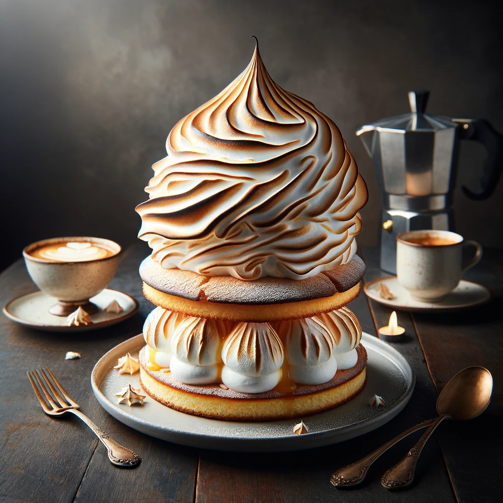

Baked Alaska Recipe
Description
Baked Alaska is an exquisite dessert that perfectly marries cold and warm elements, creating a culinary masterpiece.
It consists of layers of soft sponge cake and creamy ice cream, all enveloped in a thick, toasted meringue.
The contrast between the cold ice cream and the warm, golden meringue offers a delightful taste experience.
Its elegant appearance and the combination of textures and temperatures make Baked Alaska a favorite for special occasions, providing a visually stunning and deliciously unique end to any meal.
Ingredients
- 1 sponge cake layer (homemade or store-bought)
- 1-2 quarts of ice cream (any flavor you prefer)
- 4 large egg whites
- 1 cup granulated sugar
- 1 teaspoon vanilla extract
Steps
- Preheat your oven's broiler or prepare a torch for browning the meringue.
- Place the sponge cake layer on a baking sheet or oven-proof serving platter.
- Soften the ice cream slightly, then spread it evenly over the sponge cake. Freeze until the ice cream is very hard, at least 2 hours or overnight.
- For the meringue, beat the egg whites in a large bowl until soft peaks form. Gradually add sugar, continuing to beat until the meringue is glossy and stiff peaks form. Mix in the vanilla extract.
- Remove the cake and ice cream base from the freezer. Quickly spread the meringue over the ice cream and cake, making sure to cover all sides and sealing the edges at the base.
- Brown the meringue under the broiler or with a torch, watching closely to ensure it browns evenly without burning. This should take a few minutes.
- Serve immediately after browning the meringue for a delightful contrast of hot and cold.